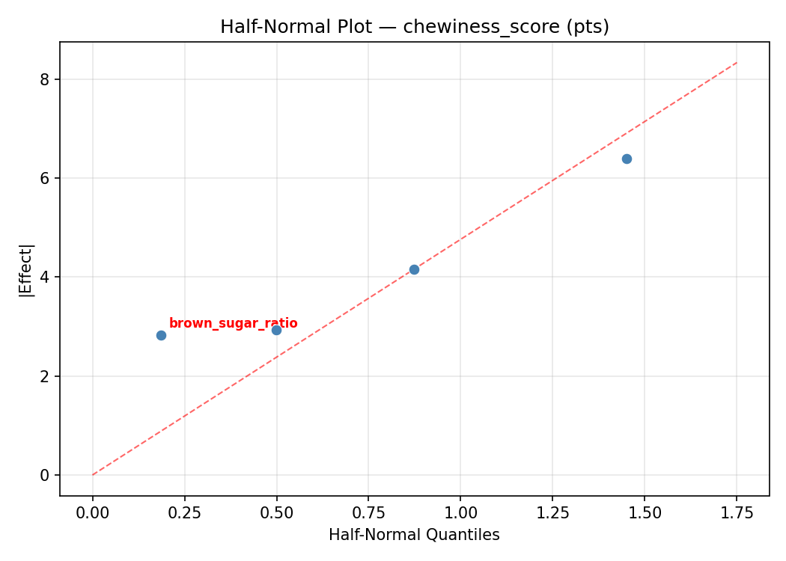
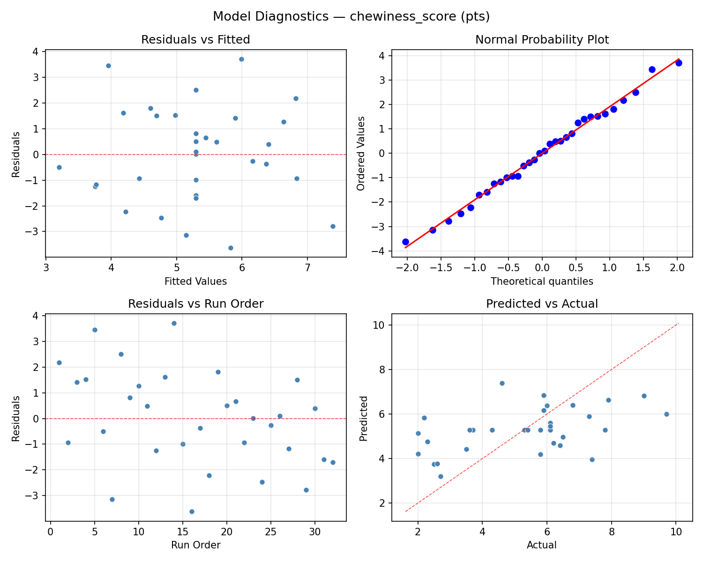

Summary
This experiment investigates cookie texture optimization. Central composite design to control chewiness vs crispness by tuning butter ratio, sugar type blend, egg count, and baking time.
The design varies 4 factors: butter pct (%), ranging from 30 to 50, brown sugar ratio (%), ranging from 0 to 100, eggs (count), ranging from 1 to 3, and bake time (min), ranging from 8 to 14. The goal is to optimize 2 responses: chewiness score (pts) (maximize) and spread ratio (ratio) (maximize). Fixed conditions held constant across all runs include oven temp = 175, flour type = all_purpose.
A Central Composite Design (CCD) was selected to fit a full quadratic response surface model, including curvature and interaction effects. With 4 factors this produces 32 runs including center points and axial (star) points that extend beyond the factorial range.
Quadratic response surface models were fitted to capture potential curvature and factor interactions. The RSM contour plots below visualize how pairs of factors jointly affect each response.
Key Findings
For chewiness score, the most influential factors were butter pct (45.9%), bake time (31.2%), eggs (15.1%). The best observed value was 9.7 (at butter pct = 40, brown sugar ratio = 50, eggs = 2).
For spread ratio, the most influential factors were eggs (34.3%), bake time (25.8%), butter pct (23.8%). The best observed value was 5.51 (at butter pct = 50, brown sugar ratio = 100, eggs = 1).
Recommended Next Steps
- Run confirmation experiments at the predicted optimal settings to validate the model.
- Consider whether any fixed factors should be varied in a future study.
Experimental Setup
Factors
| Factor | Low | High | Unit |
|---|
butter_pct | 30 | 50 | % |
brown_sugar_ratio | 0 | 100 | % |
eggs | 1 | 3 | count |
bake_time | 8 | 14 | min |
Fixed: oven_temp = 175, flour_type = all_purpose
Responses
| Response | Direction | Unit |
|---|
chewiness_score | ↑ maximize | pts |
spread_ratio | ↑ maximize | ratio |
Configuration
{
"metadata": {
"name": "Cookie Texture Optimization",
"description": "Central composite design to control chewiness vs crispness by tuning butter ratio, sugar type blend, egg count, and baking time"
},
"factors": [
{
"name": "butter_pct",
"levels": [
"30",
"50"
],
"type": "continuous",
"unit": "%"
},
{
"name": "brown_sugar_ratio",
"levels": [
"0",
"100"
],
"type": "continuous",
"unit": "%"
},
{
"name": "eggs",
"levels": [
"1",
"3"
],
"type": "continuous",
"unit": "count"
},
{
"name": "bake_time",
"levels": [
"8",
"14"
],
"type": "continuous",
"unit": "min"
}
],
"fixed_factors": {
"oven_temp": "175",
"flour_type": "all_purpose"
},
"responses": [
{
"name": "chewiness_score",
"optimize": "maximize",
"unit": "pts"
},
{
"name": "spread_ratio",
"optimize": "maximize",
"unit": "ratio"
}
],
"settings": {
"operation": "central_composite",
"test_script": "use_cases/95_cookie_texture/sim.sh"
}
}
Experimental Matrix
The Central Composite Design produces 32 runs. Each row is one experiment with specific factor settings.
| Run | butter_pct | brown_sugar_ratio | eggs | bake_time |
|---|
| 1 | 40 | 50 | 2 | 4.42733 |
| 2 | 30 | 100 | 1 | 14 |
| 3 | 50 | 0 | 3 | 8 |
| 4 | 50 | 100 | 3 | 14 |
| 5 | 40 | 50 | 4.19089 | 11 |
| 6 | 50 | 0 | 3 | 14 |
| 7 | 40 | -59.5445 | 2 | 11 |
| 8 | 30 | 100 | 3 | 8 |
| 9 | 40 | 50 | 2 | 11 |
| 10 | 50 | 100 | 1 | 8 |
| 11 | 40 | 50 | 2 | 11 |
| 12 | 50 | 0 | 1 | 14 |
| 13 | 40 | 50 | 2 | 11 |
| 14 | 50 | 100 | 3 | 8 |
| 15 | 40 | 50 | -0.19089 | 11 |
| 16 | 18.0911 | 50 | 2 | 11 |
| 17 | 40 | 50 | 2 | 11 |
| 18 | 30 | 0 | 1 | 14 |
| 19 | 50 | 100 | 1 | 14 |
| 20 | 40 | 50 | 2 | 11 |
| 21 | 30 | 0 | 3 | 8 |
| 22 | 40 | 50 | 2 | 11 |
| 23 | 61.9089 | 50 | 2 | 11 |
| 24 | 30 | 0 | 3 | 14 |
| 25 | 40 | 50 | 2 | 11 |
| 26 | 30 | 100 | 1 | 8 |
| 27 | 40 | 50 | 2 | 17.5727 |
| 28 | 40 | 50 | 2 | 11 |
| 29 | 50 | 0 | 1 | 8 |
| 30 | 40 | 159.545 | 2 | 11 |
| 31 | 30 | 0 | 1 | 8 |
| 32 | 30 | 100 | 3 | 14 |
Step-by-Step Workflow
1
Preview the design
$ python doe.py info --config use_cases/95_cookie_texture/config.json
2
Generate the runner script
$ python doe.py generate --config use_cases/95_cookie_texture/config.json \
--output use_cases/95_cookie_texture/results/run.sh --seed 42
3
Execute the experiments
$ bash use_cases/95_cookie_texture/results/run.sh
4
Analyze results
$ python doe.py analyze --config use_cases/95_cookie_texture/config.json
5
Get optimization recommendations
$ python doe.py optimize --config use_cases/95_cookie_texture/config.json
6
Multi-objective optimization
With 2 competing responses, use --multi to find the best compromise via Derringer–Suich desirability.
$ python doe.py optimize --config use_cases/95_cookie_texture/config.json --multi
7
Generate the HTML report
$ python doe.py report --config use_cases/95_cookie_texture/config.json \
--output use_cases/95_cookie_texture/results/report.html
Features Exercised
| Feature | Value |
|---|
| Design type | central_composite |
| Factor types | continuous (all 4) |
| Arg style | double-dash |
| Responses | 2 (chewiness_score ↑, spread_ratio ↑) |
| Total runs | 32 |
Analysis Results
Generated from actual experiment runs using the DOE Helper Tool.
Response: chewiness_score
Top factors: butter_pct (45.9%), bake_time (31.2%), eggs (15.1%).
ANOVA
| Source | DF | SS | MS | F | p-value |
|---|
| Source | DF | SS | MS | F | p-value |
| butter_pct | 4 | 33.5664 | 8.3916 | 1.798 | 0.1819 |
| brown_sugar_ratio | 4 | 2.1500 | 0.5375 | 0.115 | 0.9752 |
| eggs | 4 | 3.5307 | 0.8827 | 0.189 | 0.9404 |
| bake_time | 4 | 17.8864 | 4.4716 | 0.958 | 0.4587 |
| Lack | of | Fit | 8 | 46.4664 | 5.8083 |
| Pure | Error | 7 | 32.6788 | | |
| Error | 15 | 79.1452 | 4.6684 | | |
| Total | 31 | 136.2787 | 4.3961 | | |
Pareto Chart

Main Effects Plot

Normal Probability Plot of Effects

Half-Normal Plot of Effects

Model Diagnostics

Response: spread_ratio
Top factors: eggs (34.3%), bake_time (25.8%), butter_pct (23.8%).
ANOVA
| Source | DF | SS | MS | F | p-value |
|---|
| Source | DF | SS | MS | F | p-value |
| butter_pct | 4 | 1.6885 | 0.4221 | 0.977 | 0.4493 |
| brown_sugar_ratio | 4 | 0.8687 | 0.2172 | 0.503 | 0.7345 |
| eggs | 4 | 5.4848 | 1.3712 | 3.173 | 0.0447 |
| bake_time | 4 | 2.4175 | 0.6044 | 1.398 | 0.2819 |
| Lack | of | Fit | 8 | 11.3561 | 1.4195 |
| Pure | Error | 7 | 3.0252 | | |
| Error | 15 | 14.3812 | 0.4322 | | |
| Total | 31 | 24.8407 | 0.8013 | | |
Pareto Chart

Main Effects Plot

Normal Probability Plot of Effects

Half-Normal Plot of Effects

Model Diagnostics

Response Surface Plots
3D surfaces fitted with quadratic RSM. Red dots are observed data points.
chewiness score brown sugar ratio vs bake time

chewiness score brown sugar ratio vs eggs

chewiness score butter pct vs bake time

chewiness score butter pct vs brown sugar ratio

chewiness score butter pct vs eggs

chewiness score eggs vs bake time

spread ratio brown sugar ratio vs bake time

spread ratio brown sugar ratio vs eggs

spread ratio butter pct vs bake time

spread ratio butter pct vs brown sugar ratio

spread ratio butter pct vs eggs

spread ratio eggs vs bake time

Multi-Objective Optimization
When responses compete, Derringer–Suich desirability finds the best compromise.
Each response is scaled to a 0–1 desirability, then combined via a weighted geometric mean.
Overall Desirability
D = 0.6570
Per-Response Desirability
| Response | Weight | Desirability | Predicted | Dir |
|---|
chewiness_score |
1.5 |
|
6.40 0.5649 6.40 pts |
↑ |
spread_ratio |
1.0 |
|
4.96 0.8240 4.96 ratio |
↑ |
Recommended Settings
| Factor | Value |
|---|
butter_pct | 40 % |
brown_sugar_ratio | 50 % |
eggs | 2 count |
bake_time | 11 min |
Source: from observed run #19
Trade-off Summary
Sacrifice = how much worse than single-objective best.
| Response | Predicted | Best Observed | Sacrifice |
|---|
spread_ratio | 4.96 | 5.51 | +0.55 |
Top 3 Runs by Desirability
| Run | D | Factor Settings |
|---|
| #10 | 0.6270 | butter_pct=40, brown_sugar_ratio=159.545, eggs=2, bake_time=11 |
| #4 | 0.5990 | butter_pct=18.0911, brown_sugar_ratio=50, eggs=2, bake_time=11 |
Model Quality
| Response | R² | Type |
|---|
spread_ratio | 0.0937 | linear |
Full Multi-Objective Output
============================================================
MULTI-OBJECTIVE OPTIMIZATION
Method: Derringer-Suich Desirability Function
============================================================
Overall desirability: D = 0.6570
Response Weight Desirability Predicted Direction
---------------------------------------------------------------------
chewiness_score 1.5 0.5649 6.40 pts ↑
spread_ratio 1.0 0.8240 4.96 ratio ↑
Recommended settings:
butter_pct = 40 %
brown_sugar_ratio = 50 %
eggs = 2 count
bake_time = 11 min
(from observed run #19)
Trade-off summary:
chewiness_score: 6.40 (best observed: 9.70, sacrifice: +3.30)
spread_ratio: 4.96 (best observed: 5.51, sacrifice: +0.55)
Model quality:
chewiness_score: R² = 0.6328 (quadratic)
spread_ratio: R² = 0.0937 (linear)
Top 3 observed runs by overall desirability:
1. Run #19 (D=0.6570): butter_pct=40, brown_sugar_ratio=50, eggs=2, bake_time=11
2. Run #10 (D=0.6270): butter_pct=40, brown_sugar_ratio=159.545, eggs=2, bake_time=11
3. Run #4 (D=0.5990): butter_pct=18.0911, brown_sugar_ratio=50, eggs=2, bake_time=11
Full Analysis Output
=== Main Effects: chewiness_score ===
Factor Effect Std Error % Contribution
--------------------------------------------------------------
butter_pct 5.4750 0.3706 45.9%
bake_time 3.7286 0.3706 31.2%
eggs 1.8000 0.3706 15.1%
brown_sugar_ratio 0.9375 0.3706 7.9%
=== ANOVA Table: chewiness_score ===
Source DF SS MS F p-value
-----------------------------------------------------------------------------
butter_pct 4 33.5664 8.3916 1.798 0.1819
brown_sugar_ratio 4 2.1500 0.5375 0.115 0.9752
eggs 4 3.5307 0.8827 0.189 0.9404
bake_time 4 17.8864 4.4716 0.958 0.4587
Lack of Fit 8 46.4664 5.8083 1.244 0.3931
Pure Error 7 32.6788 4.6684
Error 15 79.1452 4.6684
Total 31 136.2787 4.3961
=== Summary Statistics: chewiness_score ===
butter_pct:
Level N Mean Std Min Max
------------------------------------------------------------
18.0911 1 6.0000 0.0000 6.0000 6.0000
30 8 6.0125 2.1088 2.5000 9.0000
40 14 5.1286 1.8624 2.0000 7.9000
50 8 4.2250 1.9455 2.0000 7.3000
61.9089 1 9.7000 0.0000 9.7000 9.7000
brown_sugar_ratio:
Level N Mean Std Min Max
------------------------------------------------------------
-59.5445 1 5.4000 0.0000 5.4000 5.4000
0 8 5.3750 1.5453 3.5000 7.3000
100 8 4.8625 2.7422 2.0000 9.0000
159.545 1 5.8000 0.0000 5.8000 5.8000
50 14 5.4500 2.2322 2.0000 9.7000
eggs:
Level N Mean Std Min Max
------------------------------------------------------------
-0.19089 1 4.3000 0.0000 4.3000 4.3000
1 8 5.3375 2.6715 2.0000 9.0000
2 14 5.5071 2.2033 2.0000 9.7000
3 8 4.9000 1.6767 2.5000 6.4000
4.19089 1 6.1000 0.0000 6.1000 6.1000
bake_time:
Level N Mean Std Min Max
------------------------------------------------------------
11 14 5.7286 1.9979 2.2000 9.7000
14 8 4.6250 2.3584 2.0000 9.0000
17.5727 1 2.0000 0.0000 2.0000 2.0000
4.42733 1 5.3000 0.0000 5.3000 5.3000
8 8 5.6125 1.9845 2.5000 7.8000
=== Main Effects: spread_ratio ===
Factor Effect Std Error % Contribution
--------------------------------------------------------------
eggs 1.7300 0.1582 34.3%
bake_time 1.3007 0.1582 25.8%
butter_pct 1.2000 0.1582 23.8%
brown_sugar_ratio 0.8175 0.1582 16.2%
=== ANOVA Table: spread_ratio ===
Source DF SS MS F p-value
-----------------------------------------------------------------------------
butter_pct 4 1.6885 0.4221 0.977 0.4493
brown_sugar_ratio 4 0.8687 0.2172 0.503 0.7345
eggs 4 5.4848 1.3712 3.173 0.0447
bake_time 4 2.4175 0.6044 1.398 0.2819
Lack of Fit 8 11.3561 1.4195 3.285 0.0674
Pure Error 7 3.0252 0.4322
Error 15 14.3812 0.4322
Total 31 24.8407 0.8013
=== Summary Statistics: spread_ratio ===
butter_pct:
Level N Mean Std Min Max
------------------------------------------------------------
18.0911 1 3.3400 0.0000 3.3400 3.3400
30 8 3.3625 1.3519 1.6800 5.5100
40 14 3.4693 0.7221 2.2800 4.5700
50 8 3.7900 0.7151 3.1600 4.9100
61.9089 1 2.5900 0.0000 2.5900 2.5900
brown_sugar_ratio:
Level N Mean Std Min Max
------------------------------------------------------------
-59.5445 1 2.9100 0.0000 2.9100 2.9100
0 8 3.4250 0.7088 2.5800 4.9600
100 8 3.7275 1.3743 1.6800 5.5100
159.545 1 3.5300 0.0000 3.5300 3.5300
50 14 3.4329 0.7460 2.2800 4.5700
eggs:
Level N Mean Std Min Max
------------------------------------------------------------
-0.19089 1 4.3900 0.0000 4.3900 4.3900
1 8 3.0938 1.0540 1.6800 4.9100
2 14 3.3893 0.6781 2.2800 4.5700
3 8 4.0587 0.8946 3.1600 5.5100
4.19089 1 2.6600 0.0000 2.6600 2.6600
bake_time:
Level N Mean Std Min Max
------------------------------------------------------------
11 14 3.2693 0.6398 2.2800 4.3900
14 8 3.5675 1.0229 2.0000 4.9600
17.5727 1 4.1600 0.0000 4.1600 4.1600
4.42733 1 4.5700 0.0000 4.5700 4.5700
8 8 3.5850 1.1819 1.6800 5.5100
Optimization Recommendations
=== Optimization: chewiness_score ===
Direction: maximize
Best observed run: #14
butter_pct = 40
brown_sugar_ratio = 50
eggs = 2
bake_time = 11
Value: 9.7
RSM Model (linear, R² = 0.0428, Adj R² = -0.0991):
Coefficients:
intercept +5.2938
butter_pct -0.2520
brown_sugar_ratio -0.1758
eggs +0.1959
bake_time -0.3079
RSM Model (quadratic, R² = 0.3244, Adj R² = -0.2319):
Coefficients:
intercept +5.2960
butter_pct -0.2520
brown_sugar_ratio -0.1758
eggs +0.1959
bake_time -0.3079
butter_pct*brown_sugar_ratio -0.8312
butter_pct*eggs -0.4813
butter_pct*bake_time +0.8563
brown_sugar_ratio*eggs +0.1812
brown_sugar_ratio*bake_time +0.2688
eggs*bake_time -0.0063
butter_pct^2 +0.1946
brown_sugar_ratio^2 +0.2154
eggs^2 -0.0450
bake_time^2 -0.3679
Curvature analysis:
bake_time coef=-0.3679 concave (has a maximum)
brown_sugar_ratio coef=+0.2154 convex (has a minimum)
butter_pct coef=+0.1946 convex (has a minimum)
eggs coef=-0.0450 negligible curvature
Notable interactions:
butter_pct*bake_time coef=+0.8563 (synergistic)
butter_pct*brown_sugar_ratio coef=-0.8312 (antagonistic)
butter_pct*eggs coef=-0.4813 (antagonistic)
Predicted optimum (from linear model, at observed points):
butter_pct = 30
brown_sugar_ratio = 0
eggs = 3
bake_time = 8
Predicted value: 6.2254
Surface optimum (via L-BFGS-B, linear model):
butter_pct = 30
brown_sugar_ratio = 0
eggs = 3
bake_time = 8
Predicted value: 6.2254
Model quality: Weak fit — consider adding center points or using a different design.
Factor importance:
1. bake_time (effect: 4.1, contribution: 36.7%)
2. butter_pct (effect: 3.0, contribution: 26.8%)
3. brown_sugar_ratio (effect: 2.9, contribution: 26.2%)
4. eggs (effect: 1.2, contribution: 10.3%)
=== Optimization: spread_ratio ===
Direction: maximize
Best observed run: #12
butter_pct = 50
brown_sugar_ratio = 100
eggs = 1
bake_time = 14
Value: 5.51
RSM Model (linear, R² = 0.2295, Adj R² = 0.1154):
Coefficients:
intercept +3.4912
butter_pct +0.1437
brown_sugar_ratio -0.1044
eggs -0.0567
bake_time +0.4336
RSM Model (quadratic, R² = 0.3165, Adj R² = -0.2464):
Coefficients:
intercept +3.3735
butter_pct +0.1437
brown_sugar_ratio -0.1044
eggs -0.0567
bake_time +0.4336
butter_pct*brown_sugar_ratio -0.0412
butter_pct*eggs -0.0463
butter_pct*bake_time +0.0863
brown_sugar_ratio*eggs -0.1650
brown_sugar_ratio*bake_time -0.0950
eggs*bake_time -0.0000
butter_pct^2 -0.0812
brown_sugar_ratio^2 +0.0709
eggs^2 +0.1438
bake_time^2 +0.0136
Curvature analysis:
eggs coef=+0.1438 convex (has a minimum)
butter_pct coef=-0.0812 negligible curvature
brown_sugar_ratio coef=+0.0709 negligible curvature
bake_time coef=+0.0136 negligible curvature
Predicted optimum (from linear model, at observed points):
butter_pct = 40
brown_sugar_ratio = 50
eggs = 2
bake_time = 17.5727
Predicted value: 4.4412
Surface optimum (via L-BFGS-B, linear model):
butter_pct = 50
brown_sugar_ratio = 0
eggs = 1
bake_time = 14
Predicted value: 4.2295
Model quality: Weak fit — consider adding center points or using a different design.
Factor importance:
1. butter_pct (effect: 1.5, contribution: 32.3%)
2. bake_time (effect: 1.4, contribution: 31.5%)
3. eggs (effect: 1.2, contribution: 27.5%)
4. brown_sugar_ratio (effect: 0.4, contribution: 8.7%)